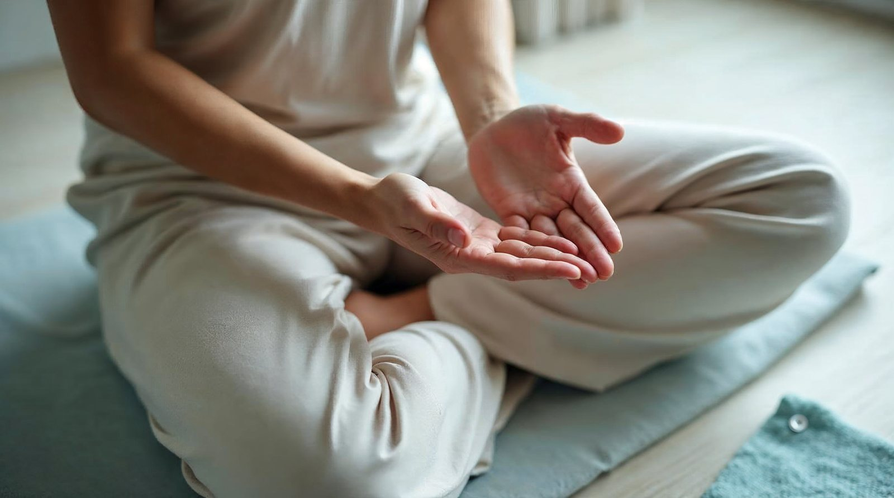
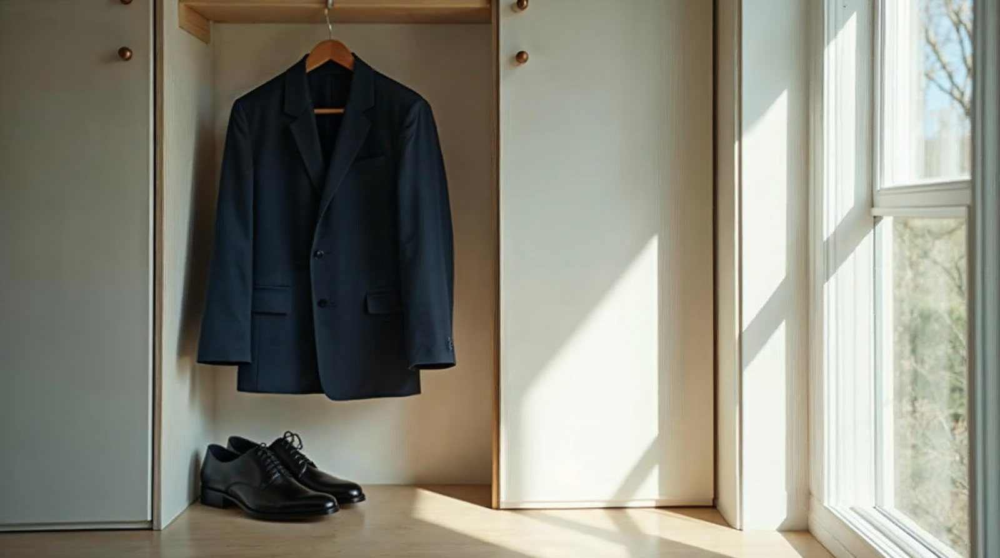
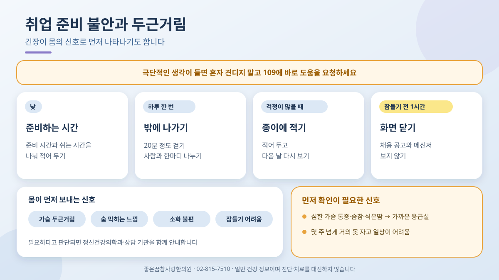

이종호 한의사 감수좋은꿈참사랑한의원 대표원장 (한의사 면허번호 19769)발행 2026-11-24 · 수정 2026-11-26
이 글의 차례
- 왜 이런 불편이 생길 수 있나요
- 왜 기다리는 시간이 더 힘들게 느껴질까요
- 비슷해 보여도 살필 점이 조금씩 다릅니다
- 먼저 이렇게 여쭙니다
- 상황별 예시
- 스스로 점검해 보세요
- 일상에서 먼저 해 볼 수 있는 것
- 하루는 이렇게 나눠 보세요
- 두근거림이 올라올 때 해 볼 수 있는 것
- 잠자리에서 걱정이 꼬리를 물 때
- 식사와 카페인도 함께 챙겨 보세요
- 비교하는 마음은 어떻게 다루면 좋을까요
- 몸을 움직이는 시간을 만들어 보세요
- 혼자 버티지 않아도 됩니다
- 면접을 앞둔 며칠은 이렇게 보내 보세요
- 결과가 좋지 않은 날에는요
- 한의원에서 함께 살필 수 있는 경우
- 얼마나 지켜보고 언제 상담할까요
- 이렇게 기록해 오시면 상담이 쉬워집니다
- 이런 증상은 먼저 확인이 필요합니다
취업 준비로 불안해 가슴이 두근거리고 잠이 오지 않는다면, 하루를 준비하는 시간과 쉬는 시간으로 나누고 잠들기 전 1시간은 채용 공고와 메신저를 보지 않는 것부터 해 보시길 권합니다. 서류 결과를 기다리거나 면접을 앞두고 친구들과 비교하다 보면 마음이 조급해지고 몸이 먼저 신호를 보내기 쉽습니다.
불안은 약한 사람에게만 오는 것이 아닙니다. 앞날이 정해지지 않은 시기에는 누구나 마음이 흔들리고, 그 흔들림이 잠과 소화, 심장 박동처럼 몸으로 먼저 드러나는 경우가 많습니다. 몸이 보내는 신호를 알아차리는 것이 마음을 돌보는 첫걸음이 되기도 합니다.
왜 이런 불편이 생길 수 있나요
- 결과를 기다리는 불확실한 시간이 길어지면 몸이 계속 긴장한 상태로 지내게 됩니다.
- 긴장은 가슴 두근거림, 숨 막힘, 소화 불편처럼 몸의 신호로 먼저 나타나기도 합니다.
- 밤늦게까지 공고와 메신저를 확인하면 머리가 깨어 있어 잠들기 어렵습니다.
- 사람을 만나고 밖에 나가는 시간이 줄면 걱정이 더 커지기 쉽습니다.
왜 기다리는 시간이 더 힘들게 느껴질까요
서류를 내고 결과를 기다리는 동안에는 할 수 있는 일이 별로 없습니다. 스스로 어찌할 수 없는 일을 기다릴 때 몸은 위험에 대비하듯 긴장을 풀지 못하고, 심장은 빨리 뛰고 어깨와 배에는 힘이 들어갑니다.
이 긴장이 며칠, 몇 주씩 이어지면 밤이 되어도 몸이 쉬는 상태로 잘 넘어가지 못합니다. 누우면 오늘 쓴 자기소개서 문장이 떠오르고, 알림 소리 하나에도 마음이 철렁해 잠이 달아납니다.
잠이 부족해지면 다음 날 같은 걱정도 더 크게 느껴지고 집중력도 떨어집니다. 그러면 준비가 덜 된 것 같아 더 늦게까지 붙잡고 있게 되고, 잠은 또 줄어드는 흐름이 생기기 쉽습니다.
비슷해 보여도 살필 점이 조금씩 다릅니다
- 면접이나 발표처럼 정해진 순간 앞에서만 두근거림과 손 떨림이 심해지는 경우에는 그 상황을 앞둔 며칠의 잠과 식사를 자세히 여쭙습니다.
- 특별한 일정이 없는데도 하루 종일 마음이 조마조마한 경우에는 생활 리듬 전체와 쉬는 시간이 얼마나 되는지를 함께 봅니다.
- 걱정보다 무기력이 커서 아침에 일어나기 힘들고 아무것도 하기 싫은 경우에는 기분의 흐름을 더 조심스럽게 여쭙습니다.
- 불안할 때마다 속이 쓰리거나 배가 아파 화장실을 자주 가는 경우에는 장의 리듬과 식사 시간도 함께 살핍니다.
- 커피와 에너지 음료를 하루 여러 잔 마신 날 두근거림이 심한 경우에는 카페인 양부터 함께 점검합니다.
먼저 이렇게 여쭙니다
- 불안이 가장 심해지는 때가 언제인가요? (결과 발표, 면접 전, 밤 등)
- 가슴 두근거림, 숨 막힘, 소화 불편 중 어떤 것이 함께 오나요?
- 잠드는 데 얼마나 걸리고, 자다가 깨나요?
- 하루 중 사람과 이야기하거나 밖에 나가는 시간이 있나요?
- 커피나 에너지 음료는 하루에 몇 잔 정도 드시나요?
- 끼니는 제때 챙기고 계신가요?
- 이 불안이 시작된 지 얼마나 되었나요?
- 준비를 멈추고 쉬는 시간이 하루에 얼마나 되나요?
상황별 예시
- 예를 들어 공채 시즌에 서류를 여러 곳에 동시에 내고 매일 결과 발표를 확인하는 경우, 알림이 올 때마다 심장이 쿵 내려앉고 밤에도 휴대폰을 손에서 놓지 못하기 쉽습니다. 결과 확인은 하루 두 번, 정해진 시간에만 하기로 정하고 나머지 시간에는 알림을 꺼 두세요.
- 예를 들어 졸업 유예를 하고 집에서 혼자 준비하는 경우, 하루 종일 같은 방에 있다 보면 낮과 밤의 구분이 흐려지고 생각이 꼬리를 물기 쉽습니다. 오전에는 도서관이나 카페처럼 집 밖에서 준비하고, 저녁에는 집으로 돌아와 쉬는 식으로 장소를 나눠 보세요.
- 예를 들어 친구들의 합격 소식을 메신저 단체방에서 연달아 접하는 경우, 축하하는 마음과 함께 조급함이 밀려와 그날 밤 잠을 설치기도 합니다. 단체방 알림을 잠시 꺼 두는 것은 친구를 멀리하는 일이 아니라 나를 돌보는 일입니다.
- 예를 들어 면접 전날 긴장해 저녁을 거르고 새벽까지 예상 질문을 외우는 경우, 다음 날 아침 속이 비고 잠이 모자라 오히려 머리가 하얘질 수 있습니다. 전날은 평소처럼 저녁을 먹고, 정해 둔 시각에는 준비를 멈추고 잠자리에 드시길 권합니다.
스스로 점검해 보세요
- 잠들기 직전까지 채용 공고나 메신저를 본다
- 잠드는 데 30분 넘게 걸리는 날이 일주일에 사흘 이상이다
- 커피나 에너지 음료를 하루 세 잔 넘게 마신다
- 끼니를 거르거나 한 끼로 몰아 먹는 날이 많다
- 하루 중 밖에 나가 걷는 시간이 거의 없다
- 친구나 가족과 준비 이야기 말고 다른 이야기를 나눈 지 오래되었다
- 두근거림이나 소화 불편 때문에 준비에 집중하기 어려운 날이 늘었다
- 결과 알림을 확인하려고 밤에 자다 깨서 휴대폰을 본다
해당하는 항목이 많다면 하루를 나누는 방법과 잠들기 전 습관부터 바꿔 볼 신호입니다.

일상에서 먼저 해 볼 수 있는 것
- 하루 일정을 준비하는 시간과 쉬는 시간으로 나눠 적어 두기
- 잠들기 전 1시간은 채용 공고와 메신저 보지 않기
- 하루 한 번은 밖에 나가 20분 정도 걷기
- 불안한 생각이 많을 때 종이에 적어 두고 다음 날 다시 보기
하루는 이렇게 나눠 보세요
준비하는 시간에 끝이 없으면 쉬는 시간에도 마음이 쉬지 못합니다. 오전과 오후에 준비할 시간을 정하고, 저녁 몇 시 이후는 '퇴근'처럼 준비를 멈추는 시간으로 정해 보세요.
할 일 목록은 하루에 세 가지 정도로 작게 적으시길 권합니다. 너무 많이 적으면 다 하지 못한 날 자책이 커지고, 그 자책이 밤잠까지 이어지기 쉽습니다. 끝낸 일에 줄을 긋는 것만으로도 하루를 마무리하는 느낌이 듭니다.
쉬는 시간에는 준비와 상관없는 일을 하나 정해 두세요. 산책, 요리, 좋아하는 음악 듣기처럼 몸이나 손을 쓰는 일이 머릿속 걱정을 잠시 내려놓는 데 도움이 됩니다.
두근거림이 올라올 때 해 볼 수 있는 것
가슴이 두근거리기 시작하면 하던 일을 잠시 멈추고 의자에 기대어 앉아 보세요. 코로 넷을 세며 숨을 들이쉬고, 입으로 여섯이나 여덟을 세며 천천히 내쉬는 것을 몇 번 되풀이합니다.
발바닥이 바닥에 닿는 느낌, 등이 의자에 닿는 느낌에 잠시 주의를 옮겨 보는 것도 방법입니다. 머릿속 걱정에서 몸의 감각으로 주의를 돌리면 두근거림이 조금 가라앉는 분이 많습니다.
이런 방법이 모든 순간에 통하지는 않습니다. 그래도 연습해 두면 면접장 앞이나 결과 발표 직전처럼 긴장되는 순간에 꺼내 쓸 수 있는 작은 도구가 됩니다.
잠자리에서 걱정이 꼬리를 물 때
누운 지 20~30분이 지나도 잠이 오지 않으면 억지로 누워 있기보다 잠시 일어나 어두운 조명 아래에서 조용히 앉아 있다가, 졸음이 오면 다시 누워 보세요. 이때 휴대폰은 보지 않는 것이 좋습니다.
머릿속에 할 일이 맴돈다면 머리맡에 둔 종이에 적어 두고 '내일 아침에 보자'고 스스로에게 말해 보세요. 적어 두면 잊어버릴까 하는 걱정이 줄어 마음이 조금 가벼워집니다.
아침에는 결과와 상관없이 일정한 시각에 일어나 햇볕을 쬐어 보세요. 일어나는 시각이 일정해야 밤에 잠드는 시각도 자리를 잡습니다.
식사와 카페인도 함께 챙겨 보세요
긴장이 이어지면 입맛이 없어 끼니를 거르거나, 반대로 밤늦게 단 음식이 당기기도 합니다. 세 끼를 거창하게 차리지 않아도 일정한 시각에 조금씩이라도 먹는 것이 몸의 리듬을 지키는 데 도움이 됩니다.
커피와 에너지 음료는 집중을 돕는 것 같지만, 많이 마시면 두근거림을 키우고 밤잠을 얕게 만들 수 있습니다. 하루 한두 잔으로 줄이고, 오후 늦게는 따뜻한 차나 물로 바꿔 보세요.
비교하는 마음은 어떻게 다루면 좋을까요
취업 준비 시기에는 친구의 합격 소식, 누군가의 스펙, 인터넷 후기가 끊임없이 눈에 들어옵니다. 다른 사람의 결과와 나의 과정을 나란히 놓으면 내가 한 일은 늘 작아 보이기 쉽습니다.
비교가 시작될 때는 '어제의 나보다 오늘 무엇을 했는지'로 질문을 바꿔 보세요. 자기소개서 한 문단을 고쳤다, 면접 질문 세 개를 연습했다처럼 작은 일이라도 적어 두면 내가 앞으로 가고 있다는 것이 눈에 보입니다.
취업 커뮤니티나 후기 글을 하루 종일 들여다보는 습관이 있다면 보는 시간을 정해 두는 것도 도움이 됩니다. 정보를 얻는 것과 불안을 키우는 것 사이의 선을 스스로 그어 보시길 권합니다.
몸을 움직이는 시간을 만들어 보세요
긴장은 몸에 남습니다. 하루 종일 책상 앞에 앉아 있으면 어깨와 목이 굳고 숨도 얕아져, 마음까지 더 답답하게 느껴지기 쉽습니다.
하루 20~30분 걷기만으로도 몸의 긴장이 조금 풀리는 분이 많습니다. 가능하면 해가 있는 낮에 걸으면 밤에 잠드는 데도 도움이 됩니다. 걸을 때는 이어폰으로 면접 영상을 듣기보다 주변 소리를 들으며 머리를 쉬게 해 보세요.
혼자 버티지 않아도 됩니다
불안한 마음을 가족이나 친구에게 이야기하는 것이 부담스럽다는 분이 많습니다. 걱정을 끼치고 싶지 않거나, 아직 결과가 없어 말을 꺼내기 민망하다는 마음이 들 수 있습니다.
그래도 한 사람에게라도 "요즘 좀 힘들다"고 말해 보세요. 해결책을 듣지 않아도, 내 마음을 누군가 알고 있다는 것만으로 짐이 조금 가벼워집니다. 학교의 학생상담센터나 청년 대상 상담 프로그램을 찾아보는 것도 방법입니다.
면접을 앞둔 며칠은 이렇게 보내 보세요
면접 날짜가 잡히면 그날까지 남은 시간을 모두 준비에 쏟고 싶어집니다. 하지만 잠이 부족한 채로 면접장에 들어가면 연습한 답도 잘 떠오르지 않기 쉽습니다.
면접 사흘 전부터는 잠드는 시각과 일어나는 시각을 면접 당일에 맞춰 보세요. 오전 면접이라면 그 시각에 머리가 맑도록 일찍 일어나는 연습을 미리 해 두는 것이 도움이 됩니다.
전날에는 새로운 내용을 외우기보다 이미 준비한 답을 가볍게 훑어보고, 입을 옷과 가는 길을 확인해 두세요. 당일 아침 서두르지 않도록 준비해 두면 긴장이 한결 덜합니다.
결과가 좋지 않은 날에는요
불합격 소식을 들은 날에는 바로 다음 지원서를 쓰기보다 하루쯤은 마음을 추스르는 시간을 가져도 괜찮습니다. 실망과 속상함을 억누르면 그 마음이 밤잠으로 옮겨 가기 쉽습니다.
그날 저녁에는 좋아하는 음식을 먹고, 믿을 만한 사람과 이야기를 나누거나 오래 걸어 보세요. 다음 날 아침 다시 하루의 일정을 세우면 됩니다. 한 번의 결과가 나라는 사람 전체를 말해 주지는 않습니다.

한의원에서 함께 살필 수 있는 경우
- 불안 때문에 잠과 식사가 흔들리는 경우 몸의 긴장과 생활 리듬을 함께 살핍니다.
- 가슴 두근거림과 소화 불편이 함께 있는 경우 몸의 신호를 함께 살핍니다.
- 필요하다고 판단되면 정신건강의학과나 상담 기관을 함께 안내합니다.
좋은꿈참사랑한의원에서는 모든 분께 맥부터 짚으며 불안이 심해지는 순간과 하루 생활, 잠을 자세히 여쭙고, 필요하면 설진·복진으로 몸의 긴장과 소화 상태를 함께 살핍니다. 그 뒤 침이나 한약 상담, 생활 리듬 조정 등 그날 필요한 방법을 정합니다.
침이 처음이거나 걱정되시면 미리 말씀해 주세요. 무엇을 왜 하는지 먼저 설명드리고, 불편하면 언제든 멈출 수 있습니다. 진료 시간에는 준비 이야기만이 아니라 요즘 하루가 어떤지 편하게 털어놓으셔도 괜찮습니다.
긴장한 채로 서둘러 오셨다면 잠시 숨을 고르신 뒤 맥을 짚습니다. 한약을 상담할 때는 지금 드시는 약과 받고 계신 상담을 먼저 확인합니다. 다시 오시면 지난번 이후 잠든 시각과 두근거림이 온 순간이 어떻게 달라졌는지부터 이어서 여쭙습니다.
얼마나 지켜보고 언제 상담할까요
- 하루를 나누고 잠들기 전 습관을 바꾼 뒤 2주 정도 잠든 시각과 불안이 심했던 순간을 적으며 지켜보세요.
- 바꿔 보아도 잠드는 데 오래 걸리는 밤이 계속되거나, 두근거림과 소화 불편 때문에 준비를 이어 가기 어렵다면 상담을 권합니다.
- 불안이 몇 주 넘게 하루 대부분을 차지하고 일상이 무너지는 느낌이 든다면 정신건강의학과 진료도 함께 받아 보시길 권합니다.
- 기록을 보며 잠이 조금 늘어난 날과 두근거림이 덜했던 날이 겹치는지도 살펴보세요. 무엇이 도움이 되었는지 알면 다음 주에 그 일을 더 늘릴 수 있습니다.
- 취업 일정이 끝난 뒤에도 잠과 소화가 제자리를 찾지 않는다면, 그때 다시 몸의 리듬을 함께 살펴봅니다.
이렇게 기록해 오시면 상담이 쉬워집니다
- 불안이 심했던 날과 그 상황
- 두근거림이나 숨 막힘이 온 시간
- 잠든 시각과 밤에 깬 횟수
- 받고 있는 상담이나 드시는 약
- 하루에 마신 커피와 에너지 음료의 양
- 밖에 나가 걸었던 날과 시간
- 끼니를 거른 날과 늦게 몰아 먹은 날
- 면접이나 결과 발표 일정
이런 증상은 먼저 확인이 필요합니다
- 스스로를 해칠 생각이 들면 ☎ 109로 바로 연락하세요.
- 가슴 통증이 심하거나 숨이 몹시 찬 경우
이런 신호가 있으면 한의원보다 가까운 병원이나 응급실을 먼저 찾으세요.

여쭙는 것
- 불안이 가장 심해지는 때가 언제인가요? (결과 발표, 면접 전, 밤 등)
- 가슴 두근거림, 숨 막힘, 소화 불편 중 어떤 것이 함께 오나요?
- 잠드는 데 얼마나 걸리고, 자다가 깨나요?
생활에서 해 볼 것
- 하루 일정을 준비하는 시간과 쉬는 시간으로 나눠 적어 두기
- 잠들기 전 1시간은 채용 공고와 메신저 보지 않기
- 하루 한 번은 밖에 나가 20분 정도 걷기
한의원에서 함께 살필 것
- 불안 때문에 잠과 식사가 흔들리는 경우 몸의 긴장과 생활 리듬을 함께 살핍니다.
- 가슴 두근거림과 소화 불편이 함께 있는 경우 몸의 신호를 함께 살핍니다.
- 필요하다고 판단되면 정신건강의학과나 상담 기관을 함께 안내합니다.
먼저 확인이 필요한 신호
- 스스로를 해칠 생각이 들면 109로 바로 연락하세요.
- 가슴 통증이 심하거나 숨이 몹시 찬 경우
한눈에 보는 표
| 구분 | 핵심 |
|---|---|
| 여쭙는 것 | 불안이 가장 심해지는 때가 언제인가요? (결과 발표, 면접 전, 밤 등) 가슴 두근거림, 숨 막힘, 소화 불편 중 어떤 것이 함께 오나요? |
| 생활에서 해 볼 것 | 하루 일정을 준비하는 시간과 쉬는 시간으로 나눠 적어 두기 잠들기 전 1시간은 채용 공고와 메신저 보지 않기 |
| 한의원에서 함께 살필 것 | 불안 때문에 잠과 식사가 흔들리는 경우 몸의 긴장과 생활 리듬을 함께 살핍니다. 가슴 두근거림과 소화 불편이 함께 있는 경우 몸의 신호를 함께 살핍니다. |
| 먼저 확인이 필요한 신호 | 스스로를 해칠 생각이 들면 109로 바로 연락하세요. 가슴 통증이 심하거나 숨이 몹시 찬 경우 |
자주 묻는 질문
불안한 건 누구나 그런 거 아닌가요?
누구나 불안할 수 있지만, 잠과 식사, 일상이 흔들릴 정도라면 혼자 견디지 말고 이야기를 나누는 것이 좋습니다.
상담과 한의원 진료를 같이 받아도 되나요?
네, 받고 계신 상담이나 복용 중인 약을 알려 주시면 함께 고려해 살핍니다. 처방받은 약은 처방한 의사와 상의 없이 줄이거나 끊지 마세요.
면접 날 아침 긴장을 줄이는 방법이 있나요?
평소 먹던 아침을 가볍게 먹고, 일찍 도착해 숨을 천천히 길게 내쉬는 시간을 가져 보세요. 들이쉬는 것보다 내쉬는 것을 길게 하면 마음을 가라앉히는 데 도움이 될 수 있습니다.
준비할 게 많은데 쉬는 시간을 정해도 될까요?
쉬는 시간이 있어야 준비하는 시간에 집중이 이어집니다. 짧게라도 준비를 멈추는 시간을 정해 두시길 권합니다.
좋은꿈참사랑한의원은 재진 때 지난번 이야기부터 이어서 여쭙니다. 진료시간과 예약은 오시는 길에서 확인하세요.
어디서 상담받을 수 있나요?
좋은꿈참사랑한의원은 서울 동작구 만양로2길 2 신성빌딩 3층·5층(서울 동작구 상도동, 7호선 상도역 3번 출구 근처)에 있습니다. 한의사 3명(이종호 대표원장, 조영기 수석진료원장, 정원영 진료원장)이 진료합니다. 진료시간은 평일 09:30~20:00(점심 13:00~14:00), 토·일·공휴일 09:30~15:00이며, 방문 전 전화로 확인을 권합니다. 예약은 네이버 예약, 카카오톡 상담, 전화 02-815-7510로 받습니다.
이 글은 일반적인 건강 정보이며 개인의 진단이나 치료를 대신하지 않습니다. 증상이 있거나 복용 중인 약이 있다면 진료를 통해 확인하세요. 치료 효과는 개인마다 다를 수 있습니다.
작성 기준: 일반적으로 알려져 있는 건강 정보를 참고해 정리했습니다(대표원장 감수). 증상 기록은 1~2주 동안 하루 1회, 비슷한 시간에 적어 오시면 지난 상태와 비교하기 쉽습니다.